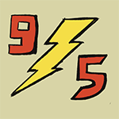
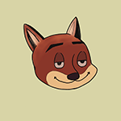
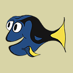
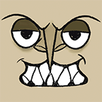
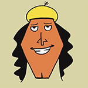

Lightning McQueen, de legendarische Piston Cup racer en winnaar van maar liefst 7 Piston Cups kijkt terug op zijn indrukwekkende carrière. Maar hoe was dat nou voor McQueen en waarom heeft hij ervoor gekozen om uiteindelijk toch in het kleine stadje Radiator Springs te blijven. McQueen vertelt je in deze aflevering alles over zijn voorgaande leven als raceauto.
Zoals jullie waarschijnlijk al weten was Nick in zijn vroegere leven een echte oplichter. Hij haalde allerlei soorten streken uit. Maar waarom precies deed hij dit, en hoe voerde hij die streken uit. In deze aflevering vertelt Nick alles over zijn verleden. Ook gaan we het hebben over zijn toekomst. Waarom heeft hij ervoor gekozen om bij de politie te werken, viel de switch van bad guy naar good guy mee of zat er nog meer achter?
Baymax is de ideale hulp in huis. Hij is hier om te vertellen over zijn gekke ervaringen en over hoe hij ermee omgaat als hij zelf hulp nodig heeft.
Dory komt praten over hoe het was om aan de oppervlakte van het water te. Voor zover ze het zich nog kan herinneren natuurlijk……
Hades, de god van de onderwereld uit Disney’s Hercules, is een charismatische slechterik met vlammend blauw haar en scherpe humor. Hij streeft ernaar Zeus van de troon te stoten en de macht over Olympus te grijpen, wat hem een onvergetelijke en komische antagonist maakt.
Kronk, bekend uit Disney’s The Emperor's New Groove, is een sympathieke maar onhandige handlanger van Yzma. Met zijn kinderlijk enthousiasme, liefde voor koken en innerlijke morele strijd is hij meer dan zomaar een slechterik. Zijn goedhartige karakter en humoristische dommigheid maken hem een geliefde en hilarische antiheld.
